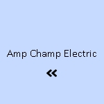

News
Electrical Installation Healdsburg
Electrical Installation Healdsburg
Electrical Installation Santa Rosa
Electrical Installation Cloverdale
Electrical Installation Geyserville
Electrical Installation Windsor
Maintenance and Repair Services Healdsburg
Maintenance and Repair Services Healdsburg
Maintenance and Repair Services Santa Rosa
Maintenance and Repair Services Cloverdale
Maintenance and Repair Services Geyserville
Maintenance and Repair Services Windsor
Electrical Safety Inspections Healdsburg
Electrical Safety Inspections Healdsburg
Electrical Safety Inspections Santa Rosa
Electrical Safety Inspections Cloverdale
Electrical Safety Inspections Geyserville
Electrical Safety Inspections Windsor
Energy Efficiency Upgrades Healdsburg
Energy Efficiency Upgrades Healdsburg
Energy Efficiency Upgrades Santa Rosa
Energy Efficiency Upgrades Cloverdale
Energy Efficiency Upgrades Geyserville
Energy Efficiency Upgrades Windsor
Specialty Electrical Services Healdsburg
Specialty Electrical Services Healdsburg
Specialty Electrical Services Santa Rosa
Specialty Electrical Services Cloverdale
Specialty Electrical Services Geyserville
Specialty Electrical Services Windsor
About Us
Contact Us
Specialty Electrical Services Cloverdale
Electrical Connectors and Fittings
Specialty Electrical Services: The Pulse Behind Today's Technological Advancements
In the heart of modern civilization, beneath the surface of our tech-driven lifestyles, lies an intricate network of electrical systems that power our world. Specialty electrical services are the lifeblood of these systems, ensuring that from the smallest gadget to the largest infrastructure project, everything receives the precise power it needs to function smoothly. This essay delves into the importance of specialty electrical services and how they underpin technological advancements in contemporary society.
At its core, specialty electrical services encompass a wide range of unique and focused skills not typically found within standard electrical work. These services include but are not limited to high-voltage installations, fiber optics integration, smart home automation, renewable energy solutions, custom lighting design, and many more specialized tasks requiring advanced knowledge and precision. Such expertise is critical in meeting today’s complex electrical demands while also catering to future innovations.
Electrical Remodeling
One key area where specialty electrical services shine is in their support for sustainable energy solutions. As we shift towards greener alternatives like solar panels and wind turbines, specialist electricians play a pivotal role in installing and maintaining these systems. They ensure that these technologies operate at peak efficiency while safely integrating them into existing power grids—a task that requires sophisticated skill sets beyond traditional wiring practices.
Another realm benefitting from such specialized know-how is smart building technology. The modern edifice no longer just provides shelter or workspace; it now offers interactive environments capable of adapting to occupants' needs. Through automated lighting controls, climate regulation systems, security features—all connected via Internet-of-Things (IoT) devices—buildings become living ecosystems responsive to human interaction. Here too, specialists with a deep understanding of both electronics and network connectivity are indispensable.
Custom lighting design further illustrates how specialty electrical services enhance our daily lives by combining aesthetics with functionality. Lighting designers work closely with architects and interior decorators to create atmospheres through light fixtures tailored for specific spaces or purposes—be it an art gallery needing delicate illumination or a stadium requiring powerful floodlights.
The entertainment industry also heavily relies on specialty electricians for setting up complex audio-visual equipment used in concerts, theater productions, or film shootings. From rigging stage lights to managing soundboards and projection systems, expert technicians ensure audiences enjoy seamless performances where every visual effect or musical note hits its mark perfectly.
Moreover, as electric vehicles (EVs) become increasingly popular among consumers aiming for eco-friendly transportation options—the installation of EV charging stations has emerged as another niche field within specialty electrical services. Electricians trained in this domain can provide safe access points for drivers needing quick charges around cities or along highways.
Finally yet importantly is safety—a fundamental aspect overseen by professionals offering specialty electrical services who rigorously abide by standards set forth by organizations like the National Electrical Code (NEC). Their adeptness at navigating complex regulations ensures all projects comply with strict codes designed to protect public well-being against potential hazards associated with improper use of electricity.
In conclusion, as we continue sailing into an era defined by rapid technological development—specialty electrical services remain instrumental behind the scenes players facilitating this progress through their unparalleled expertise and dedication. Whether harnessing the sun's power for clean energy or enabling homes that listen and learn—specialist electricians make our leap into tomorrow possible by imbuing cutting-edge projects with vitality today. Without their contributions weaving through each facet of innovation—many marvels we take for granted would simply flicker out before reaching their full luminous potential.
Specialty Electrical Services Geyserville
Data cabling and network wiring form the unseen yet critical backbone of our modern communication systems. They are the conduits through which information flows, connecting us to the world and each other.
Specialty Electrical Services Cloverdale - Circuit Breaker Replacement
Electrical Wiring
Master Electrician
Circuit Breaker Replacement
Electrical Remodeling
Voltage Testing
Electric Vehicle Charging Station Installation
In an age where everything from business operations to personal interactions relies on digital connectivity, understanding these vital components is essential. This essay delves into the intricacies of data cabling and network wiring, exploring their importance, types, installation processes, and maintenance considerations.
**The Importance of Data Cabling and Network Wiring**
Imagine a day without internet access or a moment when you cannot send an email or access your company’s database. That's what a world without proper data cabling and network wiring would look like. These physical connections carry not just our casual conversations but also support critical infrastructure—financial transactions, healthcare records, educational resources, security systems, and more rely on robust networking infrastructure.
Data cabling facilitates fast and reliable communication between devices within a network by providing a stable path for data transmission. It reduces latency (the delay before a transfer of data begins following an instruction) and increases bandwidth (the maximum rate of data transfer across a given path), ensuring that large volumes of data can be moved swiftly and efficiently.
**Types of Data Cables**
There are various types of cables used in networking:
1. **Twisted Pair Cables**: These are the most common type of cables used in local area networks (LANs). They come in two forms: unshielded twisted pair (UTP) and shielded twisted pair (STP). UTP is more prevalent due to its cost-effectiveness and ease of installation.
2. **Coaxial Cables**: Once dominant in computer networks and television distribution systems, coaxial cables have largely been replaced by twisted pairs but are still used in some applications due to their resistance to electromagnetic interference.
3. **Fiber Optic Cables**: Known for their high-speed capabilities, fiber optic cables use light to transmit information over great distances with minimal signal loss.
**Installation Process**
Installing data cabling is not as simple as laying wires from point A to B; it requires careful planning:
- **Site Survey**: Before any cable is laid out, technicians conduct a site survey to understand the building layout and determine the best pathways for cable runs.
- **Cable Management**: Proper organization ensures that cables do not become tangled or damaged over time while allowing easy access for future upgrades or repairs.
- **Testing**: After installation, each connection must be tested using specialized equipment to ensure that there are no faults or interference affecting performance.
**Network Wiring Standards**
To ensure interoperability between devices from different manufacturers as well as safe operation standards such as TIA/EIA 568-B provide guidelines on how wiring should be done:
- The standard dictates how many twists per inch different pairs within UTP cables should have;
- The pinout arrangements for connectors;
- The maximum length individual cable runs can be before signal degradation occurs.
Adhering to these standards helps maintain consistency across installations worldwide enabling easier troubleshooting maintenance procedures when necessary.
**Maintenance Considerations**
Maintaining a well-functioning network requires regular attention:
1. Keep documentation about your current setup including diagrams noting where different runs go;
2. Visually inspect your system periodically looking signs wear tear such fraying bent connectors;
3. Test your system's performance regularly using appropriate tools confirm that it still meets required specifications;
4. Stay aware new developments technology so you can plan potential upgrades keeping ahead demand growth within organization's needs.
In conclusion maintaining properly designed installed maintained system crucial part running efficient business staying connected personally professionally today's highly interconnected digital landscape With right knowledge care underlying framework our communications remain strong invisible yet indispensable feature lives workplaces homes around globe Data cabling network wiring indeed lifelines modern society they deserve recognition respect they warrant ensuring continue thrive ever-changing technological era
electrical-installation-healdsburg.html
electrical-installation-santa-rosa.html
electrical-installation-cloverdale.html
electrical-installation-geyserville.html
electrical-installation-windsor.html
maintenance-and-repair-services-healdsburg.html
maintenance-and-repair-services-santa-rosa.html
maintenance-and-repair-services-cloverdale.html
maintenance-and-repair-services-geyserville.html
maintenance-and-repair-services-windsor.html
electrical-safety-inspections-healdsburg.html
electrical-safety-inspections-santa-rosa.html
electrical-safety-inspections-cloverdale.html
electrical-safety-inspections-geyserville.html
electrical-safety-inspections-windsor.html
energy-efficiency-upgrades-healdsburg.html
energy-efficiency-upgrades-santa-rosa.html
energy-efficiency-upgrades-cloverdale.html
energy-efficiency-upgrades-geyserville.html
energy-efficiency-upgrades-windsor.html
specialty-electrical-services-healdsburg.html
specialty-electrical-services-santa-rosa.html
specialty-electrical-services-cloverdale.html
specialty-electrical-services-geyserville.html
specialty-electrical-services-windsor.html
privacy-policy.html
sitemap.html
sitemap.xml
about-us.html
feed.xml
Home theater audiovideo installations
Home Theater Audio-Video Installations: Crafting the Ultimate Cinematic Experience at Home
The advent of home theater audio-video installations has revolutionized how we experience media within the comfort of our homes. This essay explores the intricacies of setting up a home theater system that not only mimics but often surpasses the immersive experience found in traditional movie theaters.
A home theater installation is an artful combination of technology and interior design, aiming to create an environment that enhances audio and visual stimuli, transforming a section of your living space into a personal cinema. The journey from a bare room to an audiovisual haven requires meticulous planning, quality equipment, and attention to acoustics and aesthetics.
**Designing Your Space**
Before delving into the technological aspects, it's crucial to select an appropriate room. A dedicated space allows for greater control over lighting and sound insulation—key factors in achieving optimal viewing conditions. For those without an extra room, integrating a home theater setup within a multi-use space can still yield impressive results with smart design choices.
**Visual Excellence**
The centerpiece of any home theater is the video display. Whether opting for a large-screen 4K Ultra HD television or an HD projector with a retractable screen, image quality is paramount. Projectors offer larger images essential for replicating that authentic 'big screen' feel while modern televisions provide convenience and vibrant picture quality even in well-lit rooms.
**Surround Sound Spectacle**
Audio fidelity plays an equally vital role in creating an enveloping cinematic atmosphere. A surround sound system typically includes multiple speakers placed strategically around viewers to deliver multidimensional audio that moves in harmony with on-screen action. The standard 5.1 setup comprises five speakers plus one subwoofer; however, audiophiles may choose advanced configurations like 7.1 or even Dolby Atmos systems for three-dimensional soundscapes.
Specialty Electrical Services Cloverdale - Electrical Wiring
Circuit Breaker Replacement
Electrical Remodeling
Voltage Testing
Electric Vehicle Charging Station Installation
Smoke Detector Installation
Power Distribution Units (PDUs)
Knob and Tube Wiring Replacement
**Component Synergy**
The heart of any home theater is its AV receiver—an electronic hub connecting all components while managing audio decoding and amplification alongside video processing duties. Compatibility among devices ensures seamless communication between speakers, displays, streaming devices, gaming consoles, and Blu-ray players—each contributing its unique thread to the tapestry of your multimedia setup.
**Acoustic Considerations**
Great sound isn't just about powerful hardware; room acoustics significantly impact performance. Hard surfaces reflect sounds causing echoes while soft materials absorb them leading to muffled acoustics; thus thoughtful placement of acoustic panels, carpets, curtains can greatly enhance sonic clarity by balancing these effects.
**User-Friendly Control Systems**
Simplicity reigns supreme when it comes to controlling this array of technology—a universal remote or smartphone app should allow easy management so viewers can focus on enjoyment rather than troubleshooting connectivity issues during movie nights.
**Lighting Ambiance**
Proper lighting sets the stage for immersion—dimmed lights reduce glare on screens while LED backlighting behind displays creates contrast that eases eye strain during extended viewings sessions—all controllable at the touch of a button for ultimate convenience.
**Customization & Personal Touches**
Beyond technical specifications lies personalization—from choosing comfortable seating such as recliners or couches adorned with plush pillows and blankets to curated decorations reflecting cinematic tastes whether through posters or memorabilia —making your space uniquely yours adds immeasurable value beyond mere gadgetry.
In conclusion, designing and installing a home theater system is about merging cutting-edge technology with personalized taste to forge spaces where stories unfold not just before us but around us—where every detail works harmoniously towards delivering unparalleled audiovisual feasts right at our doorstep—a sanctuary where we can escape daily life's hustle into worlds bound solely by imagination's reach.
Security systems alarms and camera installation
Title: Integrating Vigilance and Technology: The Importance of Security Systems, Alarms, and Camera Installation
In the current age where safety and security are paramount concerns for homeowners and businesses alike, the installation of security systems, alarms, and cameras has become not just a luxury but a necessity. With the ever-evolving landscape of threats ranging from burglary to vandalism, it is crucial to stay ahead by adopting robust measures that can deter potential offenders and provide peace of mind.
Security systems serve as the electronic sentinels of modern properties. They are intricately designed networks that include door and window sensors, motion detectors, and high-decibel alarms. When these systems are breached by an intruder's unwelcome presence, they emit a loud sound that is intended to startle the perpetrator while simultaneously alerting those within earshot to the danger at hand. This immediate response can be the critical difference between safety and calamity.
Alarms act as both a deterrent and an alert mechanism. The psychological effect on would-be criminals cannot be overstated; often, the mere sight of alarm signage or hardware can persuade them to reconsider their illicit intentions. Moreover, modern alarms are connected to monitoring services that ensure any activation does not go unnoticed. These services contact law enforcement swiftly upon receiving an alarm signal—often before a homeowner or business operator is even aware there has been a breach.
The third pillar in this triad of vigilance is camera installation. Surveillance cameras have evolved tremendously over recent years with advancements in technology making them more accessible than ever before. Today’s cameras offer high-definition video feeds that can be monitored live or recorded for later review. They often come equipped with features like night vision capability, motion detection recording, remote viewing via smartphones or computers, and even facial recognition software.
More importantly perhaps is their role in forensics; after an incident occurs surveillance footage becomes invaluable in identifying perpetrators and aiding law enforcement with investigations. Cameras also add another layer of psychological deterrence; knowing one's actions are being recorded makes criminal activity less appealing.
When considering these three components together—security systems, alarms, and camera installations—they create a synergy that significantly elevates property protection levels. It represents an integrated approach where each element complements the others’ strengths while compensating for any weaknesses.
However, it's not just about purchasing these devices off-the-shelf; proper installation plays a vital role too in ensuring they work effectively as intended. Professional installation ensures all components are correctly placed for maximum coverage without leaving blind spots or vulnerabilities within the system’s protective shield around your property.
Furthermore, expert installers can provide valuable advice on which products best suit specific needs based on various factors such as property layout size location among others Additionally ongoing maintenance carried out by professionals guarantees continued reliability over time avoiding costly breakdowns when you least expect (or need) them
Electrical Wiring
In conclusion integrating security systems alarms camera installations into our homes businesses isn't merely about keeping up with technological trends—it's about embracing proactive measures towards safeguarding what we hold dear Our world may never be entirely free from risk but through strategic implementation advanced solutions we can certainly place ourselves several steps ahead potential threats creating environments where we feel secure thrive both personally professionally
Landscape lighting design and installation
Landscape lighting design and installation is an artful practice that transforms the outdoor environment into a nighttime spectacle, enhancing both the aesthetic appeal and functionality of residential gardens, commercial properties, and public spaces. Through the strategic placement of various lighting fixtures, landscape lighting extends the usability of outdoor areas after sundown while also providing safety, security, and showcasing the beauty of architectural and natural features.
**The Essence of Landscape Lighting Design**
At its core, landscape lighting design is about creating an ambiance that complements nature's beauty with man-made illumination. A well-designed landscape lighting plan takes into account the interplay between light and shadow, highlighting certain elements while allowing others to recede into darkness. This balance ensures that illuminated spaces feel inviting rather than overwhelming or stark.
To begin with, a designer must understand the purpose behind installing outdoor lights. Is it to illuminate a path for safe walking at night? To accentuate architectural features or statues? Or perhaps to create a warm atmosphere for outdoor entertaining? The intended use will guide decisions on light intensity, color temperature (ranging from warm yellow to cool blue tones), beam width, and fixture placement.
**The Artistic Touch in Light Placement**
An experienced landscape lighting designer knows that where you place a light can be just as significant as the light itself. For instance:
- **Path Lights:** These are used to outline walkways and steps ensuring safe passage through gardens or yards.
- **Up-lights:** By placing lights at ground level shining upward, designers can draw attention to trees or architectural details.
- **Downlights:** Often installed high up in trees or on structures casting downwards simulate moonlighting effects.
- **Accent Lights:** These focus on specific points of interest like sculptures or fountains.
- **Wash Lights:** Used for broader illumination across flat surfaces such as walls.
Circuit Breaker Replacement
Each type serves its purpose; when combined effectively they create layers of light that add depth and texture to an outdoor space.
**Technical Considerations in Installation**
Installing landscape lighting isn't solely an artistic endeavor; it involves technical knowledge as well. Several factors need consideration:
1. **Electrical Safety:** Outdoor electrical systems require weatherproofing against moisture and temperature changes.
2. **Energy Efficiency:** LED technology has become prevalent due to its long life span and lower energy consumption compared to traditional bulbs.
3. **Cabling & Power Sources:** Professional installers must carefully plan cable routes to ensure they are hidden yet accessible for maintenance while avoiding electrical overload by calculating wattages correctly.
4. **Smart Control Systems:** Modern installations often include automated controls which can adjust brightness levels based on time-of-day or motion detection.
**Environmental Impact**
With increasing awareness around environmental conservation comes responsibility towards minimizing our ecological footprint even in something like landscape lighting:
1. Use solar-powered lights where possible reducing reliance on grid power.
2. Opt for "Dark Sky" friendly fixtures designed not only preserve views but also prevent disruptive light pollution affecting local wildlife habitats.
**In Conclusion**
Landscape lighting design isn't just about putting some lights outdoors—it’s about thoughtful integration harmony between technology nature resulting in enhanced experience those who dwell within these lit environments after sunset falls upon them whether homeowner looking enjoy their garden leisurely evening stroll visitor enchanted by lit pathways urban park every project presents unique opportunity craft magical nocturnal oasis amidst darkened world outside.
Professional installation guarantees safety compliance longevity system so initial vision beautifully illuminated nightscape endures throughout years come always keeping mind delicate balance needed sustainably interact earthly surroundings we call home under starry skies above us all night long
About
Cloverdale
may refer to:
About Cloverdale
Check our other pages :
Electrical Installation Windsor
Specialty Electrical Services Cloverdale
Energy Efficiency Upgrades Geyserville
Frequently Asked Questions
What types of specialty electrical services are available in Cloverdale?
Specialty electrical services in Cloverdale typically include customized lighting solutions, home automation system installations, EV charger installations, energy efficiency upgrades, and backup generator installations. These services cater to specific needs that go beyond general electrical repairs and maintenance.
Are the electricians providing specialty services in Cloverdale certified and insured?
Yes, reputable electricians offering specialty services in Cloverdale should be fully licensed, certified for their area of expertise, and insured. This ensures they are up-to-date with the latest codes and practices and can provide safe, reliable service while protecting homeowners from liability.
How do I schedule a consultation for a specialty electrical project in Cloverdale?
To schedule a consultation for a specialty electrical project in Cloverdale, you can contact local electrical service providers directly via their website or phone number. Provide details about your project to ensure the consultation is productive. Many companies offer free consultations to assess your needs and provide an estimate for their services.
Specialty Electrical Services Cloverdale